Design and Development of a Battery Pack for the SSCP Electric Tricycle
Development and Validation of a High-Performance Battery Pack for the Smart Sustainable Community Program (SSCP) Electric Tricycle.

Development and Validation of a High-Performance Battery Pack for the Smart Sustainable Community Program (SSCP) Electric Tricycle.
This project focused on the design, development, validation, and integration of a high-performance lithium-ion battery pack for the Smart Sustainable Community Program (SSCP) Electric Tricycle.
The battery system was developed to provide reliable energy storage while satisfying vehicle performance, safety, durability, and regulatory requirements. The design process included battery sizing, electrical configuration development, enclosure design, structural and thermal validation, prototype fabrication, and system testing.
The resulting battery pack served as the primary energy source of the electric tricycle and was engineered to support daily transportation operations while maintaining safe operating conditions throughout its service life.
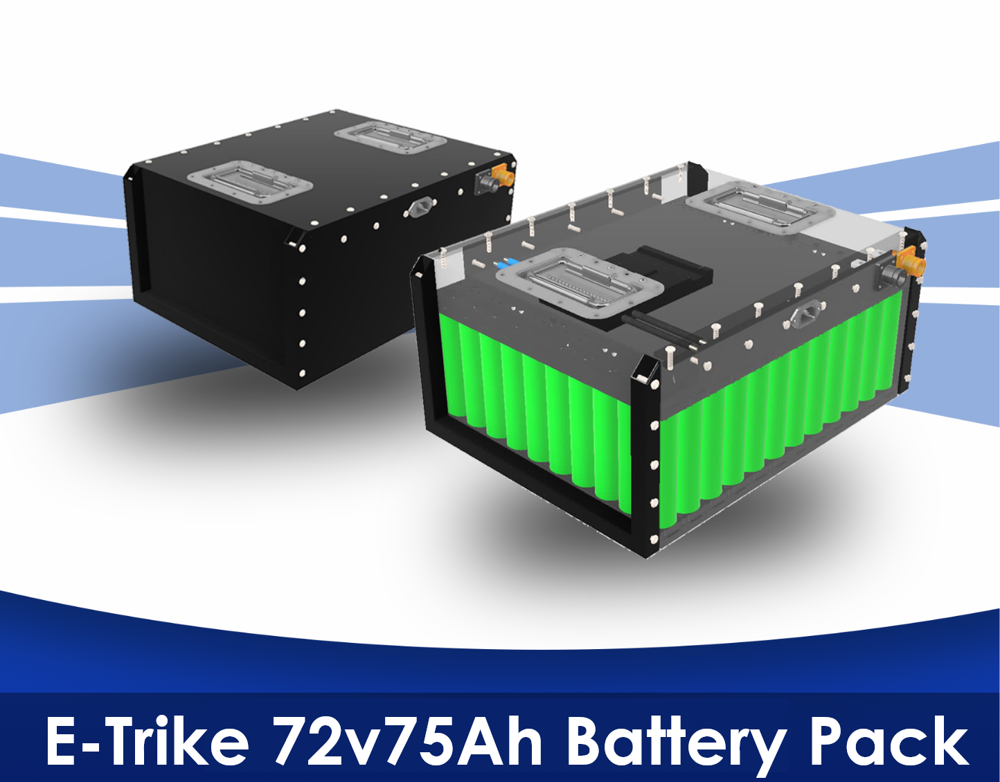
Electric tricycles require battery systems capable of delivering sufficient energy, power, safety, and durability for daily transportation operations. Improper battery sizing and inadequate thermal or structural protection can negatively affect vehicle performance, reliability, and user safety.
This project addresses these challenges by developing a battery pack that satisfies operational energy requirements while complying with relevant safety standards and engineering design practices.
The battery pack was designed using lithium-ion cells configured to meet the voltage, current, and energy requirements of the SSCP electric tricycle platform.
Battery sizing calculations were performed using drive cycle data and vehicle operational requirements to ensure sufficient driving range and system performance.
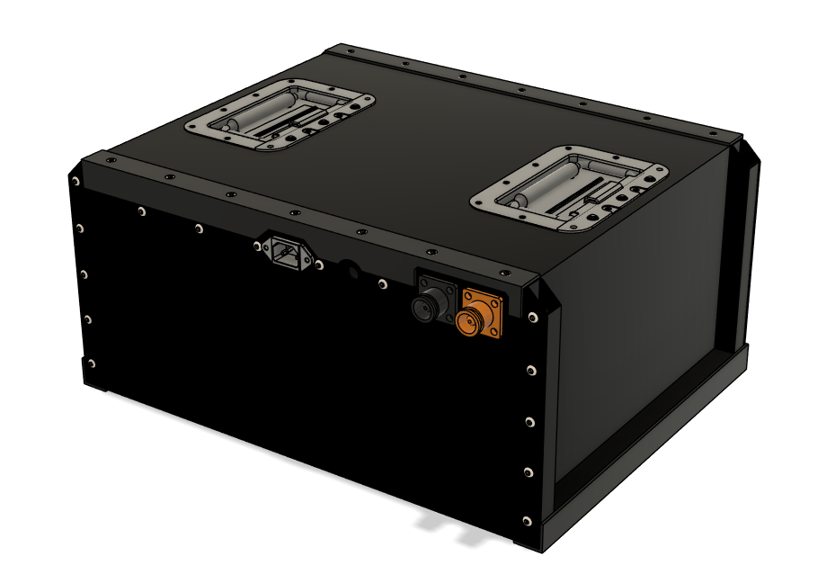
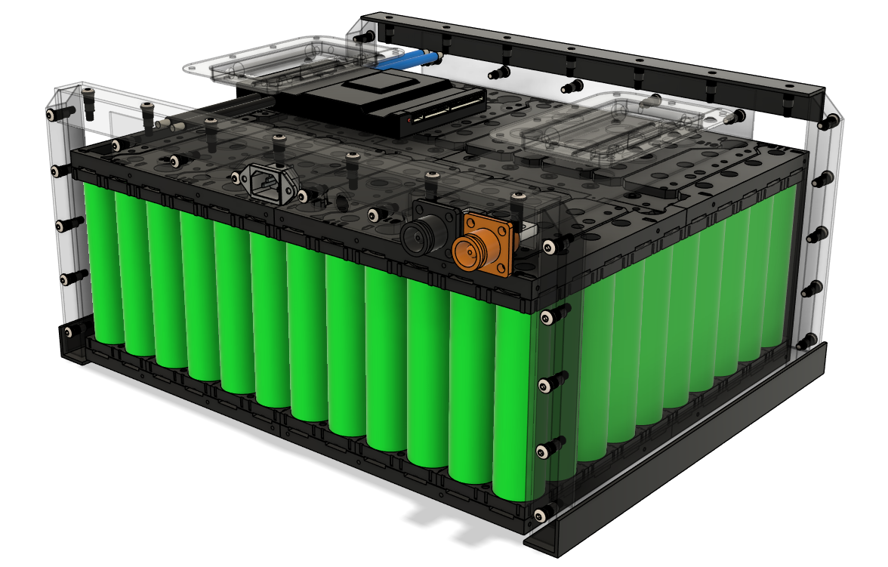
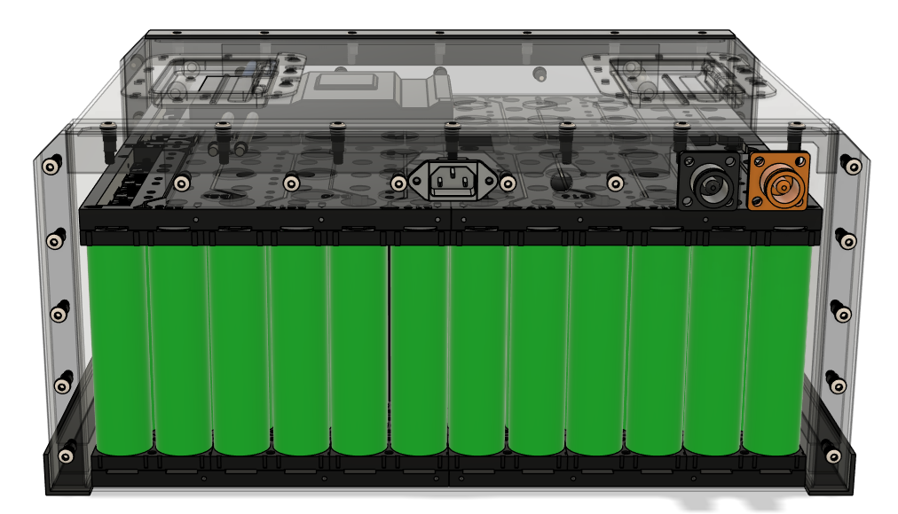
Finite Element Analysis was performed to evaluate enclosure integrity under static loading conditions, vibration environments, and operational handling loads.
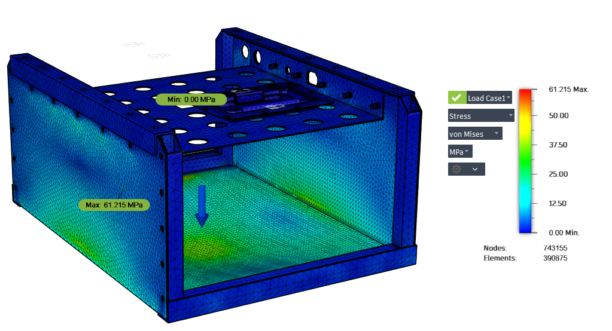
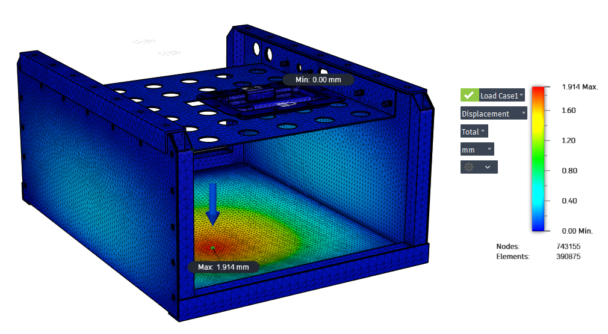
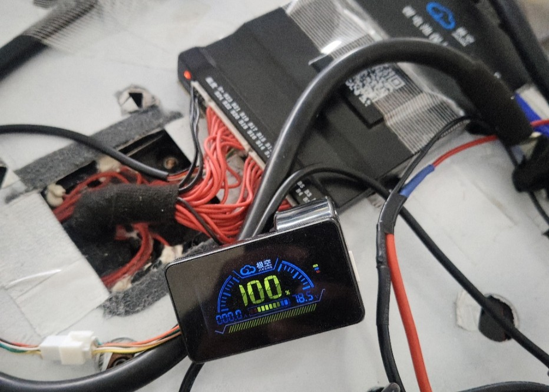
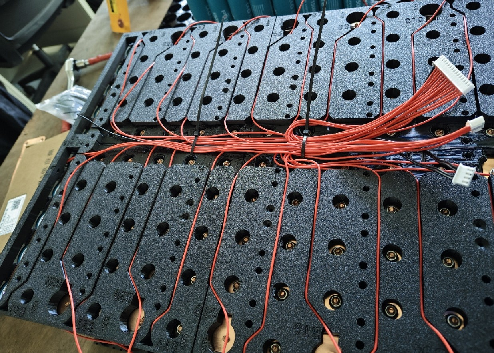
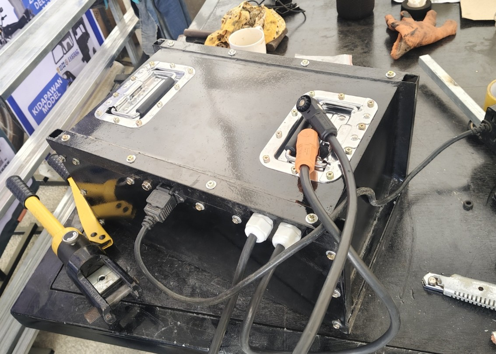
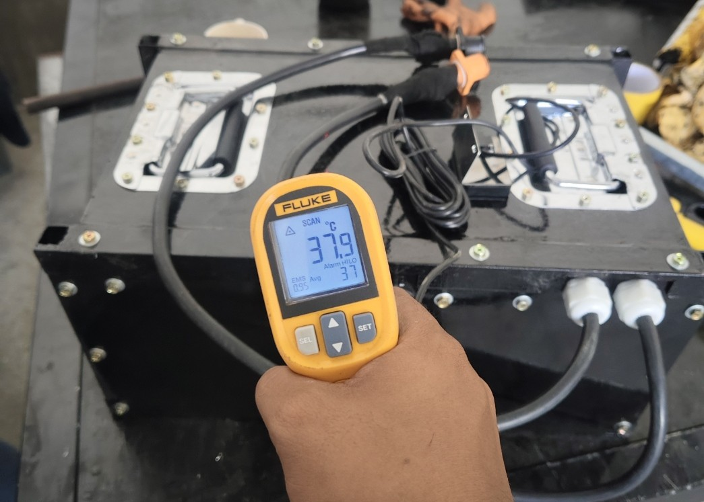
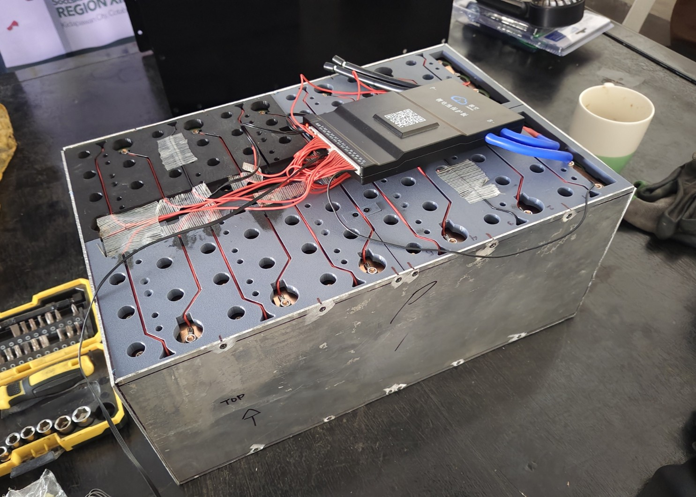
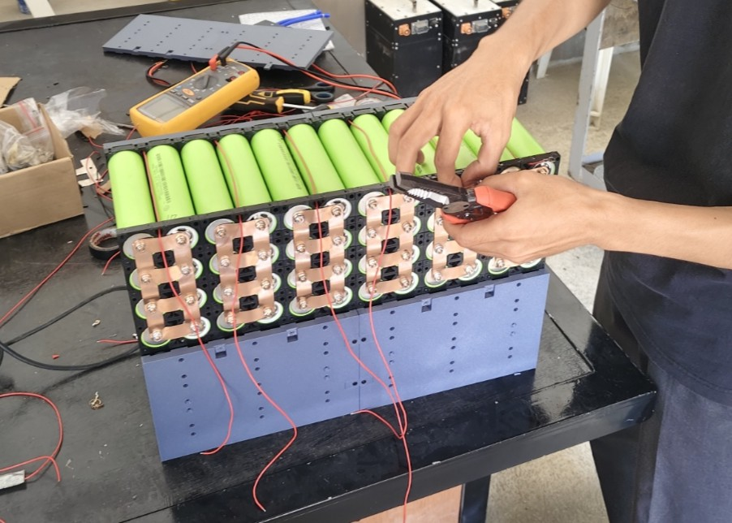
The developed battery pack successfully met the energy, power, safety, and reliability requirements of the SSCP Electric Tricycle. Validation activities demonstrated adequate structural integrity, thermal performance, and operational capability, supporting the deployment of sustainable electric transportation solutions for community-based mobility applications.